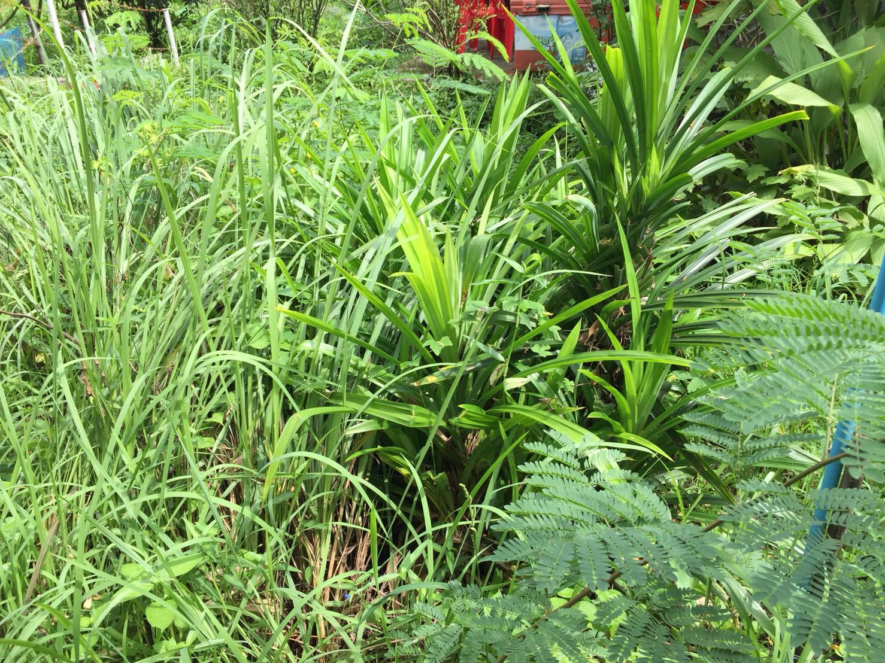

ต้นใบเตย
ใบเตย จัดเป็นไม้ยืนต้นพุ่มเล็ก ขึ้นเป็นกอ มีใบเป็นใบเดี่ยวเรียงสลับเวียนเป็นเกลียวจนถึงยอดใบ ลักษณะของเป็นทางยาว สีเขียวเป็นมัน ใบค่อนข้างแข็งมีขอบใบเรียบ ซึ่งเราสามารถนำใบเตยมาใช้ได้ทั้งใบสดและใบแห้ง ในใบเตยจะมีกลิ่นหอมของน้ำมันหอมระเหย (Fragrant Screw Pine) โดยกลิ่นหอมของใบเตยนั้นมากจากสารเคมีที่ชื่อว่า 2-acetyl-1-pyrroline ซึ่งเป็นกลิ่นเดียวกันกับที่ได้ใน ข้าวหอมมะลิ ขนมปังขาว และดอกชมนาด
คลิกเพื่อดูแผนที่